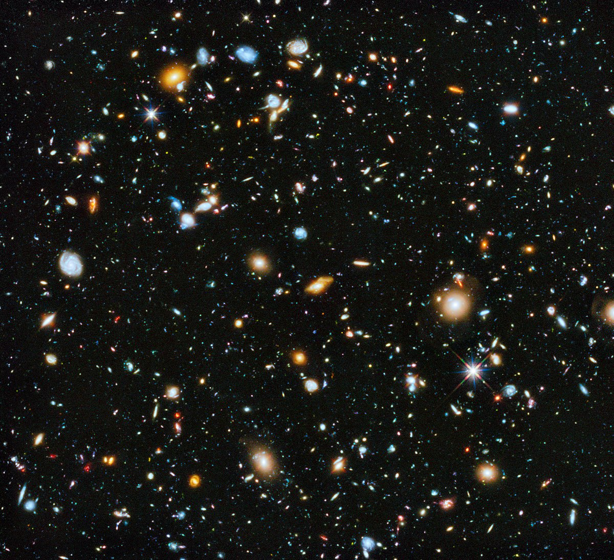

El universo
El Universo es el espacio y el tiempo que abarca todo aquello
que existe, es decir, todos los tipos de materias, los
planetas, la energía, la luz, las estrellas, los satélites,
las galaxias y otros objetos celestes, incluso, las leyes y
las constantes físicas que los gobiernan

Temperatura del universo
Todo el mundo sabe que el espacio exterior es frío.
En la gran distancia que hay entre las estrellas y las galaxias,
la temperatura de la materia gaseosa cae rutinariamente a 3 Kelvin
o 454 grados Fahrenheit bajo cero (270 °C bajo cero).
Que hay en el espacio
El espacio exterior no está completamente
vacío de materia (es decir, no es un vacío perfecto)
sino que contiene una baja densidad de partículas,
predominantemente gas hidrógeno, así como radiación
electromagnética.
Nacimiento de las galaxias
No podemos ver nada de lo que ocurrió durante los primeros
300.000 años del Universo. Los científicos intentan comprenderlo
a partir de su conocimiento de las partículas atómicas y mediante
modelos informáticos.
La única evidencia directa del propio Big Bang es un débil
resplandor en el espacio. Los vehículos espaciales y telescopios
en globos lo ven como un patrón desigual de gas ligeramente o
más caliente o más frío, que nos rodea por completo. Estas
ondulaciones también muestran los lugares donde las nubes
de hidrógeno eran un poco más densas
